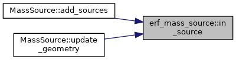
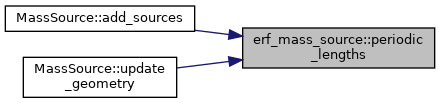

- Generated by
 1.9.1
1.9.1
|
ERF
Energy Research and Forecasting: An Atmospheric Modeling Code
|
Functions | |
| AMREX_GPU_HOST_DEVICE AMREX_FORCE_INLINE bool | in_source (int i, int j, int k, amrex::Array4< amrex::Real const > const &z, amrex::Array4< amrex::Real const > const &zg, int kg, amrex::GpuArray< amrex::Real, AMREX_SPACEDIM > const &problo, amrex::GpuArray< amrex::Real, AMREX_SPACEDIM > const &dx, amrex::GpuArray< amrex::Real, 2 > const &period, amrex::Real x0, amrex::Real y0, amrex::Real r2, amrex::Real hmax) noexcept |
| amrex::GpuArray< amrex::Real, 2 > | periodic_lengths (const amrex::Geometry &geom) |
| The domain length in x and y where geom is periodic, 0 where it is not. More... | |
A localized source of gas inside the domain (erf.mass_source.*), e.g. the release from a ruptured pipeline.
The gas is injected at a total rate mdot(t) [kg/s], spread uniformly over the cells whose centres lie within erf.mass_source.radius of (center_x, center_y) horizontally and less than erf.mass_source.height above the local ground. The same source is added to
With mesh refinement every level adds the same source density S = mdot / V to its own cells in the region, where V is the volume of the region on the composite grid: the cells of each level that the next finer level does not cover. The composite rate is then mdot however the levels cut the region, and a level without source cells adds nothing. V, and the height of the ground under each column, are recomputed only when the grids change.
Inputs: erf.mass_source.center = x y [m] erf.mass_source.radius = r [m] erf.mass_source.height = h [m above the local ground] erf.mass_source.rate = mdot [kg/s >= 0] constant, or erf.mass_source.rate_file = file two columns "t mdot" [s, kg/s >= 0], '#' comments; linear in between, zero outside the table erf.mass_source.theta = theta [K > 0] optional erf.mass_source.tracer = true optional
|
noexcept |
Is the centre of cell (i,j,k) inside the source region? z is the nodal height z_phys_nd and zg the nodal height of the ground under the column (2D, at k = kg). period holds the domain length in x and y where the domain is periodic and 0 where it is not: there the distance is to the nearest periodic image of the centre, so the region wraps around
Referenced by MassSource::add_sources(), and MassSource::update_geometry().

|
inline |
The domain length in x and y where geom is periodic, 0 where it is not.
Referenced by MassSource::add_sources(), and MassSource::update_geometry().
